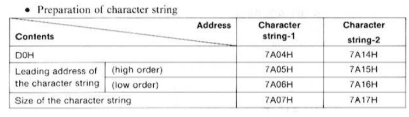
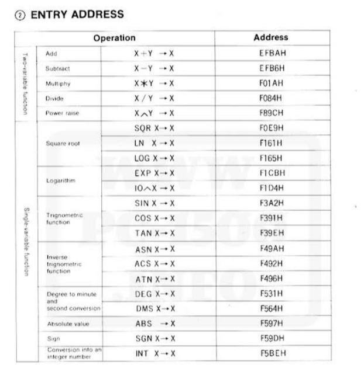

Introduction
This book is a collection of notes on the use and programming of the Sharp PC-1500 pocket computer. We assume the reader has access to a Sharp PC-1500 or an emulator such as PockEmul, which can even be accessed from a web browser here.
These notes are taken from different sources such as the Sharp PC-1500 Instruction Manual.
The code of the book is available on GitHub.
First steps
When you first start the calculator, which can be done by pressing the ON button, you will be greeted by a prompt.
Notice also that above the screen a RUN prompt is displayed. This means that the calculator is in RUN mode, what this means will be explained later, but for now we will always want to be in RUN mode. If you are not in RUN mode, you can switch to it by pressing the MODE key until the RUN prompt is displayed.
Introducing something like
2+2
and pressing enter will give you the expected result:
4
To discard the result simply press the red CL, shorthand for clear, button at the right of the calculator.
Now, with a fresh screen, you could even write something like:
2+2*2
obtaining
6
And any other expression you could expect of a calculator. But the real power of the PC-1500 is that it
can run any BASIC program. Introducing, for example:
PRINT "Hello, World!"
will produce the expected output:
Hello, World!
We can also assign values to variables and print them:
A=20
PRINT A
will output
20
In this fashion we can only execute one line of program at a time, in the following chapters we will see how to write multi-line programs.
The BASIC programming language
Writing single line programs is kind of limited, so let's see how to write programs with multiple lines.
To write our program we first need to enter the programming mode, to do this
simply press the mode key until the PRO indicator is displayed above the
screen. This modes gives us a "text editor" like interface that will make
writing long programs easier.
TODO: add graphics
Now the computer is ready to accept our program, lets start with the classical
Hello, World! program. The program is introduced line by line, so first we
introduce the following input.
10 PRINT "HELLO, WORLD!"
When you are done introducing the line, press the enter key to accept it. The
first number in the line is the line number, it is used to reference the line in
the program, and is mandatory. After the line number we have the statement, in
this case PRINT, which prints the string that follows it, in this case
"HELLO, WORLD!".
Now we can run the program, to do this, press the MODE key until the RUN
prompt is displayed above the screen. Then press enter the following command.
RUN
The program will run and display the HELLO, WORLD! message on the screen.
Let's add a second line to our program, to do this return to the PRO mode and
write:
20 PRINT "GOODBYE, WORLD!"
Running the program again will show the two lines, one after another. Let's say
we want to output something between the two lines, we can simply add a new line
in PRO mode, between the two existing lines.
15 PRINT "I'M A COMPUTOR!"
Running wil yield the expected output, but oops we made a typo, to fix it we can
go again into PRO mode and use the list command
LIST 15
This will let us edit the line, and fix the typo, to do this point the cursor to
the incorrect character by using the left and right keys, then simply press
the character you want to replace it with, in this case E.
15 PRINT "I'M A COMPUTER!"
Expressions
Let's dive deeper into the syntax of BASIC. As we've seen before a program in BASIC consists of a list of lines, each line begins with a line number, followed by a statement.
The line number uniquely identifies each line, the lines of the program are executed in order according to the line number. And are also used as labels for branch statements, which we'll see later.
The statement after the line number tells the computer what to do, we've seen some examples, like the assignment statement:
10 LET A = 10
or simply
10 A = 10
And the print statement:
20 PRINT A
We'll focus on the first for now. In the RUN mode the computer is in a REPL,
each expression introduced is immediately evaluated and the result is displayed
on the screen. In PRO mode, this is not the case, all expression must be used
alongside a statement, such as an assignment or a print statement.
10 A = 10 + (2 * 8)
20 PRINT A + 25
Operators
There are four arithmetic operators: +, -, *, /. The precedence of the
operators is the usual. The + and - can also be used in their unary form,
There are also boolean bitwise functions AND, OR and NOT, which seem to
have all the same precedence, that is the lowest.
Basic IO
Control flow
Functions
Grammar
The grammar has been extracted from sources as much as possible, but a big chunk of it has been reverse engineered from the calculator's behavior. Checked with BNF Visualizer.
/* --- Tokens --- */
<digit> ::= [0-9]
<number> ::= <digit>+
<letter> ::= [A-Z]
<identifier> ::= <letter> (<letter> | <digit>)*
<comparison_op> ::= "=" | "<>" | "<" | ">" | "<=" | ">="
<add_sub_op> ::= "+" | "-"
<mul_div_op> ::= "*" | "/"
<char> ::= [A-Z] | [a-z] | [0-9]
| " " | "!" | "\"" | "#" | "$" | "%" | "&" | "'" | "(" | ")"
| "*" | "+" | "," | "-" | "." | "/" | ":" | ";" | "<" | "="
| ">" | "?" | "@" | "[" | "\\" | "]" | "^" | "_" | "`"
| "{" | "|" | "}" | "~"
<string> ::= "\"" <char>* "\"" | "\"" <char>*
<newline> ::= "\n"
/* functions */
<and> ::= "AND"
<or> ::= "OR"
<not> ::= "NOT"
/* --- Grammar --- */
<program> ::= <line>+
<line> ::= <number> <stmt> <newline>
/* stmts */
<stmt> ::= <atomic_stmt> (":" <atomic_stmt>)*
<atomic_stmt> ::= <assignment>
| <print>
| <pause>
| <input>
| <wait>
| <cursor>
| <gcursor>
| <gprint>
| <if>
| <for>
| <next>
| <goto>
| <gosub>
| <return>
| <end>
| <comment>
| <data>
| <read>
| <restore>
| <poke>
| <call>
| <dim>
/* Comments */
<comment> ::= "REM" <char>*
/* Variables */
<variable> ::= <identifier> "$"?
<array_subscript> ::= <variable> "(" <expr> ("," <expr> )? ")"
<lvalue> ::= <variable> | <array_subscript>
<assignment> ::= "LET"? <lvalue> "=" <expr>
/* I/O */
<print> ::= "PRINT" <expr> (";" <expr>)*
<pause> ::= "PAUSE" <expr> (";" <expr>)*
<input> ::= "INPUT" (<expr> ";")? <lvalue>
<wait> ::= "WAIT" <expr>?
<cursor> ::= "CURSOR" <expr>
<gcursor> ::= "GCURSOR" <expr>
<gprint> ::= "GPRINT" <expr> (";" <expr>)* | "GPRINT" <string>
/* Data */
<data_item> ::= <number> | <string>
<data> ::= "DATA" <data_item> ("," <data_item>)*
<read> ::= "READ" <lvalue> ("," <lvalue>)*
<restore> ::= "RESTORE" (<number>)?
/* Control flow */
<if> ::= "IF" <expr> "THEN" <stmt> ("ELSE" <stmt>)?
<for> ::= "FOR" <variable> "=" <expr> "TO" <expr> ("STEP" <expr>)?
<next> ::= "NEXT" <variable>
<goto> ::= "GOTO" <number>
<gosub> ::= "GOSUB" <number>
<return> ::= "RETURN"
<end> ::= "END"
/* Assembly */
<poke> ::= "POKE" <number>, (<number>)+
<call> ::= "CALL" <number>
/* Arrays */
<dim> ::= "DIM" <variable> "(" <number> ("," <expr> )? ")" ("*" <number>)?
/* exprs */
<expr> ::= <comparison>
<comparison> ::= <add_sub> (<comparison_op> <add_sub>)*
<add_sub> ::= <mul_div> (<add_sub_op> <mul_div>)*
<mul_div> ::= <factor> (<mul_div_op> <factor>)*
<factor> ::= "-" <factor> | "+" <factor> | <term>
<term> ::= <number> | <lvalue> | <string> | "(" <expr> ")"
Expression of Variables and Programs
Expression of Decimal Numbers
Decimal numbers are represented using 8 bytes to accommodate values within the range: [-9.999999999 \times 10^{99}, + 9.999999999 \times 10^{99}]
Byte Structure
- 1st Byte: Exponent (binary format, can be negative)
- 2nd Byte: Mantissa sign (00H for positive, 80H for negative)
- 3rd to 7th Bytes: Mantissa value within [-9.999999999, + 9.999999999]
- 8th Byte: Reserved (always 00H)

Expression of Binary Numbers
Binary numbers use 8 bytes, though only 3 bytes are active (5th, 6th, and 7th) within the range: [-32768, +32767]
Byte Structure
- 5th Byte: Reserved (B2H)
- 6th to 7th Bytes: Binary number value
- 1st to 4th, 8th Bytes: Invalid data

Expression of Character Strings
Character string information is composed of 8 bytes, where only 4 bytes are used. The character string information resides in the address specified.
Byte Structure
- 5th Byte: Reserved (D0H)
- 6th to 7th Bytes: Leading address (0000H to FFFFH)
- 8th Byte: Size of the string (01H to 50H)
- 1st to 4th Bytes: Invalid data

Structure of Variable Names
Variable names consist of two bytes representing 2 ASCII characters and contain bits to distinguish between numeric and non-numeric variables, with support for array assignments.
Bit Structure
- 1st to 8th bits: First ASCII character
- 9th bit: Array assignment (1 for arrays, 0 otherwise)
- 10th bit: 7th bit of the ASCII code (least significant byte)
- 11th bit: Indicates if the variable is numeric (0) or non-numeric (1)
- 12th to 16th bits: Second ASCII character (low-order bits)


Structure of Program Lines
Each line in the program consists of a line number, line size, code, and an end code (0DH).
Byte Structure
- 2 Bytes: Line number
- 1 Byte: Line size
- Variable Bytes: Program code
- 1 Byte: End code (0DH)

Structure of Reserved Area
BASIC Commands and Memory Address
BASIC Command List:
| Command | Internal Code | Description |
|---|---|---|
ABS | F170H | Returns absolute value of a number |
ACS | F174H | Arc cosine function |
AND | F150H | Logical AND operation |
AREAD | F18OH | Reads analog input |
ARUN | F181H | Auto-run a program |
ASC | F160H | Returns ASCII code of a character |
ASN | F173H | Arc sine function |
ATN | F175H | Arc tangent function |
BEEP | F182H | Produces a sound from the device speaker |
BREAK | F0B3H | Interrupts program execution |
CALL | F18AH | Calls a machine language subroutine |
CHAIN | F0B2H | Links to another program |
CHR$ | F163H | Converts ASCII code to character |
CLEAR | F187H | Clears variables and resets memory |
CLOAD | F089H | Loads program from tape |
CLS | F088H | Clears the display |
COM$ | F858H | Communicates via serial port |
CONSOLE | F0B1H | Switches to console mode |
CONT | F183H | Continues from a STOP or BREAK |
COLOR | F0B5H | Sets display text color |
COS | F17EH | Cosine function |
CSAVE | F095H | Saves program to tape |
CSIZE | E680H | Sets character size for printing |
CURSOR | F084H | Positions cursor |
DATA | F18DH | Holds data for READ statements |
DEF | F165H | Defines a function |
DEGREE | F18CH | Sets angle mode to degrees |
DEV$ | E857H | Device name for serial communication |
DIM | F179H | Declares an array with specified dimensions |
DMS | F166H | Degree-minute-second (DMS) conversion |
DTE | E884H | Date function |
END | F19EH | Marks end of program |
ERL | F053H | Returns line number of error |
ERN | F052H | Returns error number |
ERROR | F1B4H | Error handling function |
EXP | F176H | Calculates e^x |
FEED | F0B0H | Paper feed on printer |
FOR | F1A5H | Begins a FOR loop |
GCURSOR | F093H | Graphics cursor control |
GLCURSOR | E682H | Lower graphics cursor control |
GOSUB | F194H | Jumps to subroutine, returning with RETURN |
GOTO | F192H | Unconditional jump to a line number |
GPRINT | F09F | Graphics print |
GRAD | F186H | Sets angle mode to gradients |
GRAPH | E681H | Switches to graphics mode |
IF | F196H | Conditional branching |
INKEY$ | F15CH | Returns last pressed key |
INPUT | F091H | Takes input from the user |
INSTAT | E859F | Checks input status |
INT | F171H | Converts to integer |
LCURSOR | E683H | Lower cursor control |
LEFT$ | F17AH | Returns left substring |
LEN | F164H | Returns length of a string |
LET | F198H | Assigns a value to a variable |
LF | F0B6H | Line feed |
LINE | F0B7H | Draws line in graphics mode |
LIST | F090H | Displays program code |
LLIST | F0B8H | List program to printer |
LN | F176H | Natural logarithm |
LOCK | F1B5H | Locks program for editing |
LOG | F177H | Natural Logarithmic function |
LPRINT | F0B9H | Print to line printer |
MEM | F158H | Displays memory usage |
MERGE | F08FH | Merges another program into current program |
MID$ | F17BH | Extracts a substring |
NEW | F19BH | Clears program and data areas |
NEXT | F19AH | Ends a FOR loop |
NOT | F16DH | Logical NOT |
OFF | F19EH | Turns off power (optional in certain models) |
ON | F19CH | Handles events based on specific conditions |
OPN | F19DH | Opens file for I/O |
OR | F151H | Logical OR |
OUTSTAT | E880H | Checks output status |
PAUSE | F1A2H | Pauses program execution |
PEEK | F16FH | Reads data from a memory address |
PEEK# | F16EH | Extended peek for memory data |
PI | F15DH | Returns value of Pi |
POINT | F168H | Returns graphics point color |
POKE | F1A1H | Writes data to a memory address |
POKE# | F1A0H | Extended poke for memory data |
PRINT | F097H | Displays text on screen |
RADIAN | F1AAH | Sets angle mode to radians |
RANDOM | F1A8H | Returns a random number |
READ | F1A6H | Reads data from DATA statements |
REM | F1ABH | Comment statement |
RESTORE | F1A7H | Resets DATA pointer |
RETURN | F199H | Returns from subroutine |
RIGHT$ | F172H | Returns right substring |
RINKEY$ | E85AH | Reads last input key |
RLINE | F0BAH | Reads a line from printer |
RMT | E7A9H | Remote command for communication |
RND | F17CH | Returns a random number (RANDOM?) |
ROTATE | E685H | Rotates graphics display |
RUN | F1A4H | Starts program execution |
SETCOM | E882H | Sets communication mode |
SETDEV | E886 | Sets device configuration |
SGN | F179H | Returns sign of a number |
SIN | F17DH | Sine function |
SORGN | E684H | Sets origin for graphics |
SPAVCE$ | F061H | Returns a string of spaces |
SQR | F16BH | Returns the square root of a number |
STATUS | F167H | Displays status information |
STEP | F1ADH | Specifies increment in FOR loop |
STOP | F1ACH | Pauses program |
STR$ | F161H | Converts a number to a string |
TAB | F0BBH | Moves cursor to specified position |
TAN | F17FH | Tangent function |
TERMINAL | E883H | Switches to terminal mode |
TEST | F0BCH | Tests condition in program |
TEXT | E686H | Switches to text mode |
THEN | F1AEH | Specifies action if condition in IF is met |
TIME | F15BH | Returns current time |
TO | F1B1H | Specifies range in FOR loop |
TRANSMIT | E885H | Transfers data via serial |
TROFF | F1B0H | Turns trace off |
TRON | F1AFH | Turns trace on |
UNLOCK | F1B6H | Unlocks program for editing |
USING | F086H | Formats output |
VAL | F162H | Converts string to a numeric value |
WAIT | F1B3H | Pauses execution until condition met |
ZONE | F0B4H | Sets tabulation zone for printing |
System Subroutines List
1. Character Functions
| Name | Memory Address | Description |
|---|---|---|
| Combination of Characters | D925H | Combines multiple characters into a single string |
| CHR$ | D9B1H | Converts an ASCII code to its corresponding character |
| STR$ | D9CFH | Converts a string representation of a number back to a numeric value |
| VAL | D9D7H | Converts a string to a numeric value |
| LEN, ASC | D9DDH | LEN: Returns the length of a string; ASC: Returns ASCII code of a character |
| RIGHT$ | D9F3H | Extracts a specified number of characters from the right end of a string |
| MID$ | D9F3H | Extracts a substring from a string, given a starting position and length |
| LEFT$ | D9F3H | Extracts a specified number of characters from the left end of a string |
2. Arithmetic Operations
| Name | Memory Address | Description |
|---|---|---|
| Subtract | EFB6H | Subtracts one number from another |
| Add | EFBAH | Adds two numbers |
| Multiply | F01AH | Multiplies two numbers |
| Divide | F084H | Divides one number by another |
| LN | F161H | Computes the natural logarithm of a number |
| LOG | F165H | Computes the base-10 logarithm of a number |
| EXP | F1CBH | Calculates the exponential function (e^x) |
| 10^n | F1D4H | Computes 10 raised to the power of a specified exponent |
| COS | F391H | Computes the cosine of an angle |
| TAN | F39EH | Computes the tangent of an angle |
| SIN | F3A2H | Computes the sine of an angle |
| ACS | F492H | Computes the arc cosine (inverse cosine) of a value |
| ATN | F496H | Computes the arc tangent (inverse tangent) of a value |
| ASN | F49AH | Computes the arc sine (inverse sine) of a value |
| DEG | F531H | Converts a radian measure to degrees |
| DMS | F564H | Converts a degree measure to degrees, minutes, and seconds |
| ABS | F597H | Computes the absolute value of a number |
| SGN | F59DH | Returns the sign of a number (1 for positive, -1 for negative, 0 for zero) |
| INT | F5BEH | Returns the integer portion of a number, discarding any fractional part |
| Power Rise | F89CH | Raises a number to a specified power |

3. Compare
| Name | Memory Address | Description |
|---|---|---|
| Numerical Comparison | D0D2H | Compares two numeric values and returns a result |
| Character String Comparison | D0F9H | Compares two strings lexicographically to determine order |

4. Search
| Name | Memory Address | Description |
|---|---|---|
| Line number Search | D2EAH | Searches for a specific line number in the program |
| KEY Scan (1) | E42CH | Scans the keyboard to detect key presses; single key detection |
| KEY Scan (2) | E243H | Scans the keyboard for combinations |
| Variable Search | D461H | Searches for a variable by name in the program’s memory |
5. Display
| Name | Memory Address | Description |
|---|---|---|
| Auto-power-off | E33FH | Manages automatic power-off to conserve battery life |
| Program display | E8CAH | Displays the current program code on the screen |
| Graphic Display | EDEFH | Enables graphical display mode |
| Hexadecimal | ED95H | Displays a value in hexadecimal format |
| One Character Display | ED3BH | Displays a single character at the current position |
| Cursor Move After One Character Display | ED4DH | Moves the cursor one position after displaying |
Cursor Move After n Character Display | ED00H | Moves the cursor by n positions after displaying |
6. Printer Related
| Name | Memory Address | Description |
|---|---|---|
| Color Designation | A519H | Sets the color for subsequent text or graphics display |
| A781H | Sends data to be printed | |
| Linefeed | A9F1H | Moves the cursor or paper to the next line |
| Paper Feed | AA04H | Advances the paper on a connected printer |
Get TEXT Mode Ready | ACBBH | Prepares the system for text mode |
| Pen Up/Down | AAE3H | Raises or lowers the pen for drawing or plotting |
| Motor Drive | A8DDH | Activates the motor for peripherals like printers |
| Motor Off | A769H | Turns off the motor |
Get GRAPHIC Mode Ready | ABEFH | Prepares the system for graphics mode |
7. Cassette Tape
| Name | Memory Address | Description |
|---|---|---|
| Remote On | BF11H | Activates remote mode for external control or communication |
| Remote Off | BF43H | Deactivates remote mode |
| One Character Save | BDCCH | Saves a single character to memory or storage |
| One Character Load | BDF0H | Loads a single character from memory or storage |
| Header Input/Output | BCE8H | Manages input/output operations for data headers |
| CMT I/O Control | BBF5H | Controls cassette tape (CMT) input/output functions |
| Create Header | BBD6H | Generates a data header for file storage or transmission |
| Transfer File | BD3CH | Transfers a file between devices or storage media |